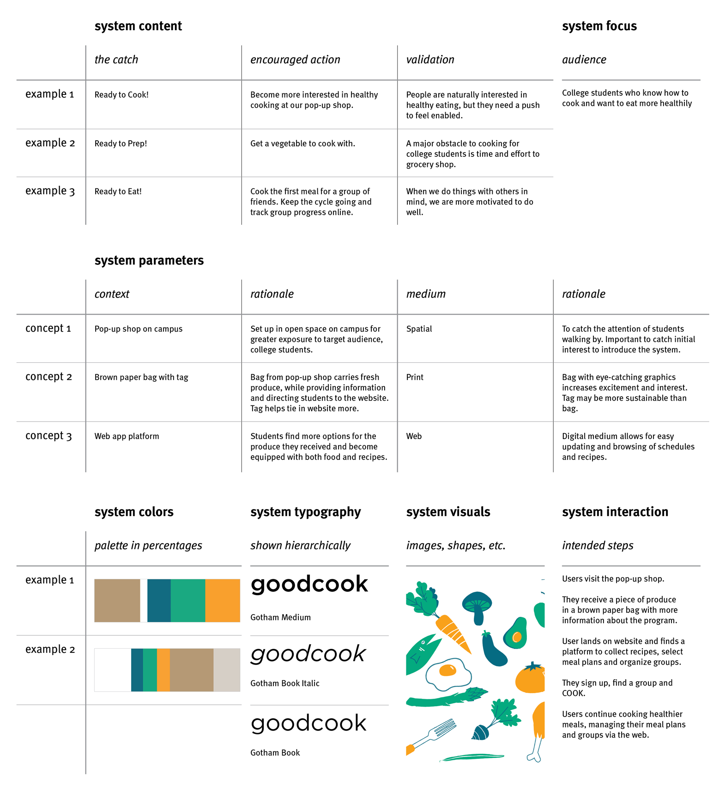
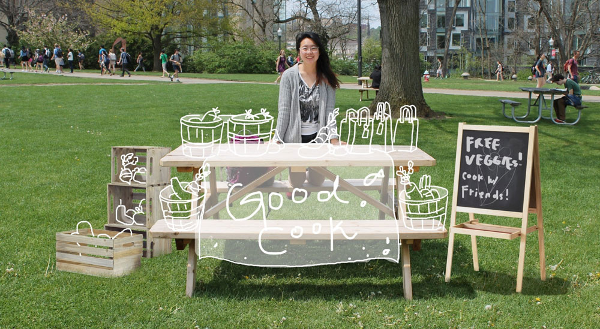
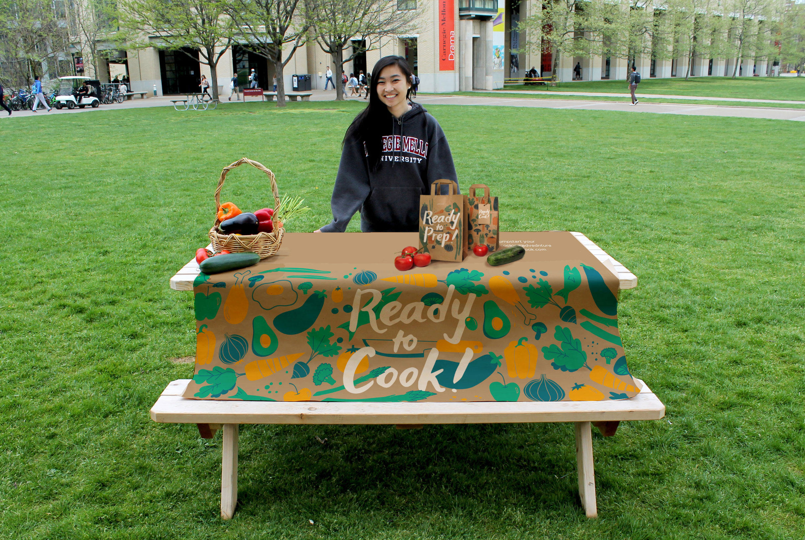
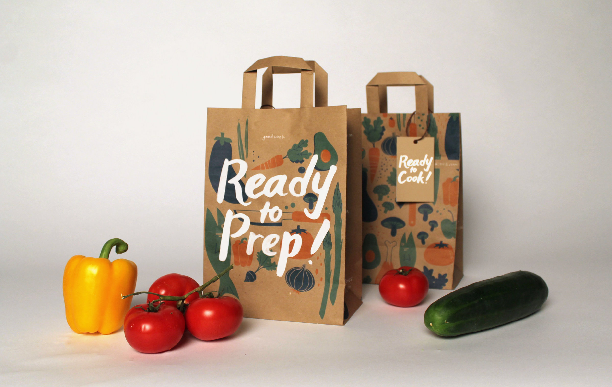
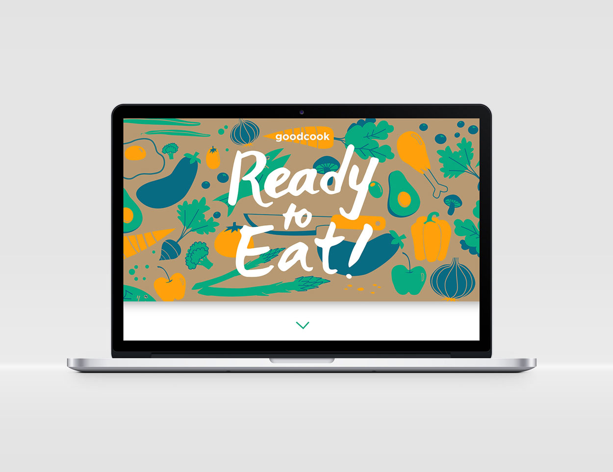
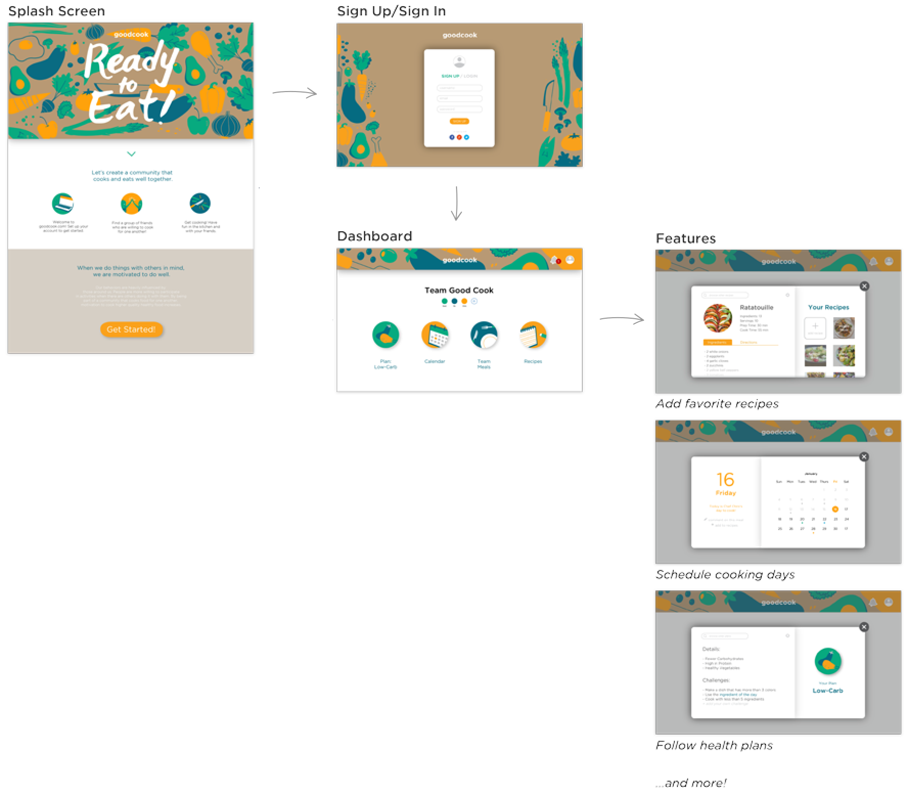

GoodCook: Healthy Eating
Challenge
Design a system that helps college students build healthy eating habits. Must include a digital, print, and spatial component.
Outcome
GoodCook, a program that promotes healthy eating through peer accountability, and a visual style guide for touch points across the system.
Team (3 designers) Natalie Harmon, Christie Chong, me
Overview
We designed 3 touch points to guide users through the process of building healthy eating habits: 1) a pop-up shop to raise awareness about GoodCook, 2) a paper bag containing vegetables to incentivize students to cook, and 3) a website, where users can start a long-term routine with friends to take turns cooking, saving time on their non-cooking days and keeping each other accountable.
Research
Key Findings
For our audience, we decided on college students because there is an obvious need for healthier habits. We conducted interviews with our peers to learn about their eating patterns.
We were surprised to find that students avoid cooking mainly because they feel incompetent at it, so we aimed to present cooking as simple yet beneficial. We also realized that social events led to better cooking, so our secondary goal was to encourage cooking in community.
The only time I make real food is when people are over. I've gotta impress!

Visual System
Exploration
Once we had our concept, we worked on forming a visual language that supported it. We tested many different colors and styles, asking people how each combination made them feel. We aimed for a playful and exciting style to reflect what cooking could be.
Below are my individual explorations (the carrots are a combined comparison).
For our final version, people we asked thought it felt unique and quirky, making for a memorable combination. We also chose to use the Gotham font family for its round, friendly qualities.

Final Style Guide
This style guide outlines our research validation, the context in which each piece exists, and the relationship between written content and imagery in our system.
Touch Points
Spatial
We used digital and physical mockups to explore ways to create an attention-grabbing spatial piece.
Print/Physical
Designing the bag involved lots of print testing on different paper.
Digital
For the website, we selected key pages to mock up to communicate its intended purpose. We prototyped in tangent with the development of our visual language.
Final: Pop-Up Shop
Final: Paper Bag

Final: Website
 Learning Outcomes
- Identifying a problem and its constraints, audience, and physical context
- Developing a visual voice that complements a message and subject matter
- Developing a cohesive visual system across different media
- Discerning how to design calls to action for short-term (pop-up shop & bag) and long-term (website) action
Reflection
If I were to do this project again, I would explore more dynamic and interesting ways to use our visual system across different media. For example, the use of our background pattern is consistent but also static from print to digital. I would also like to think deeper about business partnerships and services, such as local vendors or farmers who might provide produce for giveaway.